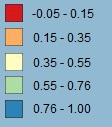

Intercomparison
In this section we compared the two maps in order to assess their similarities and differences. First, we preprocessed them by aligning them and setting the same null values, having like this two comparable maps. They are represented bellow.
|
Global Human Settlement - Population
|
WorldPop - Population
|
People/km²
|
First comments on the two maps
These two maps try to reprensent the population over a portion of the east part of the world (China, Japan, Korea and part of Mongolia and Russia). As explained in the introduction part, two different methods have been used to produced the data of each map and it results on differences on the number of person per pixel.
The same legend have been applied to be able to make a first eye-level comparison. We chose to start with small increments because the highest variations are seen from 0 to 100. The increment is then higher because only small and precise areas such has big cities are concerned by very high density of population.
We chose to add the layer representing the borders of the countries in order to identify the places with high concentration of people and to understand why some areas are shown as deserted. Indeed, we can clearly identify on the two maps a wide surface with extremely few density of population, notably in the north of our study area. After having linked these areas to Russia and Mongolia lands and knowing that these countries are known to have harsh climatic and geomorphic conditions to live, we understood the huge desert represented on our maps. We downloaded the shapefile countaining the border of countries on http://thematicmapping.org.
With regard to the populated areas, at first sight the WorldPop map shows more colors than the GHS-pop one. We can therefore think that more people are counted with the WorldPop method, but we will see in the following that the difference is more a question of disagragation. Indeed, the two rasters are built starting from the census data bases but, while the WorldPop method disaggregates this data, the GHS-pop method mixes it with the proportion of build-up areas. It results that the WorldPop raster is more sparsed over the territory and the GHS-pop one more agregated into buildings (making it easier to identify cities).
To evaluate more in details the difference between the two maps we computated "GHS_pop - World_pop" and represented it into a new map, showed just bellow in the "difference" layer.
|
Difference: "GHS pop" - "WorldPop"
|
People/km²
|

Tiles correlation
|
|
Reclassified
|
Analysis of "difference" and "reclassified difference" layers
This map highlights the differencies, represented by the colours. While in the purple pixels the WorldPop value is higher than the GHS one, in the green areas it is lower. Therefore, the less colorful is a pixel, the more similar are the two maps. If we zoom on the populated areas, we discover that, on the whole, the map tends to be more purple than green, which could mean that in average the WorldPop pixels value are higher than the GHS one. To go deeper into this hypothesis and verify it, we decided to represent the map of differences into 3 classes:
- 0 : when GHS and WorldPop are exacly equals (green)
- 1 : when GHS is higher than WorldPop (blue)
- 2 : when GHS is lower than WorldPop (pink)
Using the QGIS raster tool called "raster layer unique values report", we have then computed the number of cell per class, which resulted in :
- GHS = WorldPop : 12 410 983 px (59%)
- GHS > WorldPop : 1 399 605 px (7%)
- GHS < WorldPop : 7 276 205 px (34%)
Thus, this new classification enables us to bring two conclusions:
First, GHS and WorldPop are similar for more than half of the map (59%). If we look at the "reclassified difference" layer, we can see that most of the green areas (corresponding to GHS = WorldPop) is located in the north of our study area. This corresponds to the less populated territories. So the two maps are similar in the less populated regions.
Then, with regard to the pixels containing a difference, there are much more pixels with higher value for the WordlPop raster than the GHS one (i.e more pink than blue). Moreover, if we look again at the "reclassified difference" layer, we see that the blue pixels (corresponding to GHS > WorldPop) are more located in the urban areas and equally distributed with pink pixels in these zones. But the more we move away from urban areas, the more pink pixels and the fewer blue ones there are, untill we reach the green pixels. As a result of this classification, we conclude that the WorldPop raster is more sparsed than the GHS one.
However, this first classification is not sufficient. It indicates that there are differencies but disregards the value of these differencies, which could make us think at first instance that more people are counted on the WorldPop map than the GHS one. But this assumption being unsatisfactory, we computed some statistics from the values of the difference map. Some relevant results are commented in the following section.
General statistics
|
The mean is close to 0, which reveals that in average, on the whole area of study, the two rasters counted a similar number of people. As the mean is negative, the WorldPop count is in average slightly higher than the GHS one, but this difference is really small (0.35 compared to the range of 111 696). The mean of absolute value enables us to know that, in average, the difference of the two maps in one pixel is of 43,4304 persons. This is not negligeable and reveals that the two maps are not similar in each pixel. They counted the same number of people on the whole area of study but they didn't position them exactly in the same place. This is confirmed by the very high values of minimum and maximum (respectively -54 941 and 56 765). To evaluate if the difference of position is high, we decided to compute the mean, the minimum and the maximum of the "difference" raster in each tile. The next section will present and explain the results of this calculation. |
The standard deviation is also very high and indicates that the values over the area of study are spread over a wide range around the mean which corroborates the previous comments. The dispersion is high because in average the pixels don't have the same value, they only have values that offset each other on the whole.
The non null cells represent only 46% of the total cells and this is due to the presence of water in our area of study. Some tiles have a very few number of non-null cells, which could lead to strangenesses in our results, in particular for the correlation between the two maps, but we will see this later in the dedicated section.
Statistics per tile: Mean, Min and Max
As said before, we computed the mean value per tile of the "difference" raster in order to evaluate if, even in smaller areas, the two maps counted a similar number of people. We decided to represent the results in a graph.
This graph brings out some tiles for which the difference is further away from 0 than others. Indeed, while most of the tiles have a mean difference close to 0, we can identify six tiles with a higher mean (in absolute value): the tiles 128, 153, 154, 177, 178 and 180.
If we look at the corresponding areas we discover that all these tiles cover a water area with very small lands. Therefore, these tiles are mostly composed by null cells and the mean is computed with only a few pixels. Thus, we can consider that these tiles are not meaningful for our mean per tile analysis and conclude that in each tile the two maps counted a similar number of people.
Then, we computed the minimum and maximum value per tile and represented it on the following graph.
This second graph brings to light that in tiles where minimum (in absolute value) is high, the maximum in the same tile is also high with a similar value of difference. This means that people have just been counted on a different pixel, but a quite close one since it is in the same tile.
Statistics per tile: Correlation factor
Finally, we computed the correlation factor of the two rasters in each tile and represented it on the map with 5 colors to classify the different degrees of correlation. With the blue tiles, we can notice that 56% (15/27) of the tiles have a correlation factor higher than 0.76 and, above all, that all highly urban surfaces are covered by these blue tiles. This reveals that the two maps are reasonably linearly correlated in the most densely populated areas.
Then, when moving away from urban areas, we first have the 4 green tiles on the land, representing a correlation from 0.76 to 0.55. In these areas, the mean difference is close to zero but, as these tiles are much less populated, the pixels are less likely to be positioned at the same place. Thus, the correlation between the two ratsers is smaller. In the same way, the 3 yellow tiles depict even less populated areas and therefore less correlated tiles.
Lastly, the orange and red tiles feature a correlation smaller from 0.33 and 0.15 respectively. As explained in the previous sections, these tiles correspond to areas with very a few non-null cells, which explains why the correlation between the two maps is low, or even negative for the two red tiles.
Conclusion of intercomparison
The two datasets counted the same number of people in the whole area, which was expected since both rasters were built starting from the census databases. But, from these, two different methodologies were used to obtain both datasets.
On the one hand, the GHS-pop method mixed the census data with the proportion of build-up areas, which results in a raster more agregated into buildings and therefore into urban areas. On the other hand, the WorldPop method only disaggregated the census data which results in a more sparsed data over the territory.
Concretelly, we first declared from the analysis of the map "difference" that the two maps are pixelwise similar in the less populated regions. Then, a comparison tile per tile of the two datasets enabled us to state that each people have not been positioned exactly in the same pixel on the two rasters but on a reasonably close one. Finally, we highlighted the linear correlation between the two datasets, specifically in the most densely populated areas.
Therefore, the two datasets show numerous similarities but their biggest difference lies in the disaggregation of the census data. At this point, the choice of one dataset or the other will depend on the application and the area of study. For a region with high density of population where we can have reliable data on residential settlement, the GHS-Pop raster could be an adapted dataset whereas for regions with unclear data on buildings, the WorldPop dataset would be more accurate.